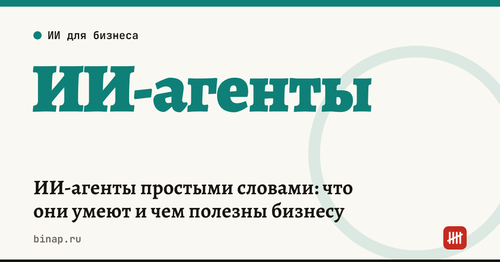

ИИ-агенты простыми словами: что они умеют и чем полезны бизнесу

ИИ-агент — это нейросеть, которая не только отвечает текстом, но и сама выполняет действия: открывает сайты, заполняет формы, звонит и записывает на услуги. В России такого агента 12 ноября 2026 года запустил «Яндекс» в «Алисе AI», пока для ограниченного круга пользователей.
Коротко
- Чат-бот советует, агент делает: делит задачу на шаги и сам выбирает инструмент для каждого шага.
- По данным vc.ru и «Ведомостей», агент «Действуй!» в «Алисе AI» работает с сайтами в облачном браузере, звонит в организации и частным лицам, записывает на услуги и бронирует столики.
- Значимые действия он согласует: звонок нужно разрешить, запись — подтвердить, расшифровка разговора приходит в чат.
- Сначала доступ получат несколько тысяч самых активных пользователей с опцией «Алиса Плюс», позже — все в рамках подписки.
- Юридически разговор с агентом, как пишут «Ведомости», «ничего не значит» — договорённости фиксируйте письменно.
Сроки, изменения и разборы для ИП и самозанятых — каждое утро в Telegram и MAX. Подпишитесь, чтобы не пропустить.
Как устроен агент
По описанию на vc.ru, у «Действуй!» несколько частей:
- Основной агент на языковой модели решает, что делать дальше, и выбирает инструменты.
- Браузерный агент работает с сайтами: смотрит на страницу, нажимает кнопки, заполняет формы. Вы видите ход работы и можете перехватить управление.
- Телефонный агент звонит, задаёт вопросы по списку, выслушивает ответ и задаёт уточняющий вопрос. Речь собеседника переводится в текст.
- Свой виртуальный компьютер для каждого пользователя: файлы, запуск кода, проверка результата. Есть планировщик задач, сохранённые инструкции и память между запусками.
- Подключения — плагины для внешних сервисов и собственные MCP-серверы.
Цены подписки в источниках не названы — перед подключением смотрите официальную страницу «Яндекса».
Что можно поручить агенту, а что оставить себе
Для малого бизнеса важно другое: агент берёт на себя рутину, где много шагов и мало решений.
| Задача | Можно поручить агенту | Что оставить себе |
|---|---|---|
| Узнать цены и сроки у 5 поставщиков | Обзвон по списку вопросов, сводная таблица | Выбор поставщика, договор |
| Собрать брони, билеты и счета из почты | Найти письма, разложить по папкам | Проверку сумм |
| Записаться на услугу (ремонт, сервис) | Подобрать время и записать | Подтверждение записи |
| Заполнить типовую форму на сайте | Ввести данные по шаблону | Отправку документов в госорганы и банки |
Звонок агента — это не договор. Цену и сроки, которые назвал поставщик по телефону, попросите подтвердить письмом или счётом.
Что сделать сейчас
- Выберите одну задачу на пробу. Подойдёт то, что вы делаете каждую неделю по одному сценарию: уточнить наличие, сравнить цены, записаться. С формулировкой поможет статья Как писать запросы к нейросети: 7 правил на примерах бизнеса.
- Напишите инструкцию. Сначала попросите обычную нейросеть составить её. Запрос:
«Я [кто вы: ИП, магазин стройматериалов]. Хочу поручить ИИ-агенту [задача: обзвонить поставщиков и узнать цену и срок на товар]. Составь пошаговую инструкцию для агента: что спросить, что записать в таблицу, когда остановиться и спросить меня. Добавь список того, что агенту нельзя делать без моего подтверждения: оплачивать, подписывать, передавать данные клиентов».
- Не отдавайте агенту лишние данные. Паспортные данные, телефоны клиентов, пароли от банка и личных кабинетов в задачу не включайте. Что ещё нельзя передавать нейросети — в статье ИИ и персональные данные: что нельзя отправлять в нейросеть.
- Готовьтесь, что позвонят вам. Если вы принимаете записи по телефону (салон, клиника, кафе), договоритесь с администратором: сверять имя и телефон клиента и подтверждать запись сообщением.
- Посчитайте пользу. Засеките, сколько минут уходит на задачу вручную, и сравните со временем на проверку работы агента. Готовые инструкции под типовые задачи — в разделе ИИ-агенты для бизнеса, ещё идеи — в статье ИИ для малого бизнеса: 10 задач.
Частые вопросы
Чем агент отличается от чат-бота? Чат-бот отвечает текстом, а действуете вы. Агент сам выполняет шаги: открывает сайт, заполняет форму, звонит.
Агент может что-то купить без меня? По описанию в источниках, значимые действия он согласует: звонок нужно разрешить, запись на услугу — подтвердить.
Можно ли считать разговор с агентом договорённостью? Нет. Цены и сроки подтверждайте письменно — счётом, письмом или в мессенджере.